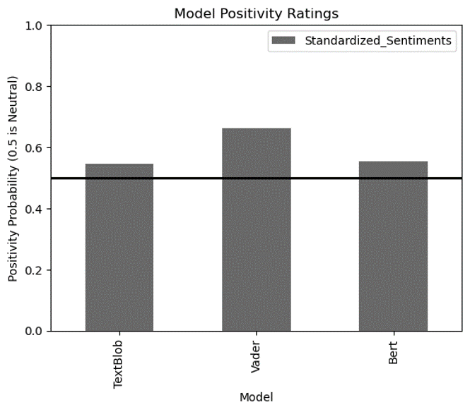
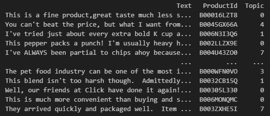
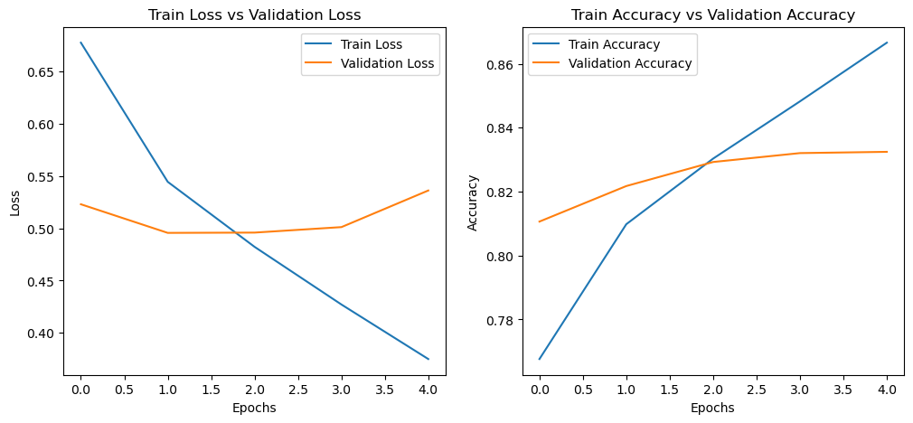
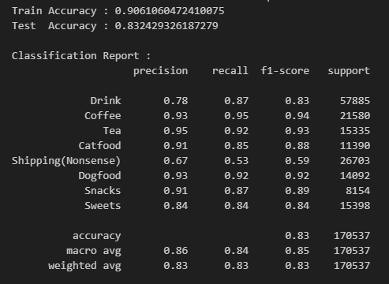
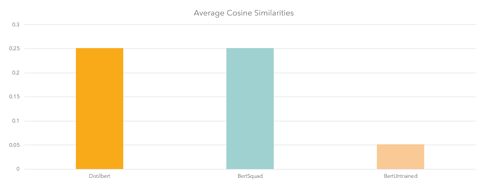

Sentiment Analysis Project
This is the first major project we have done in MA488!
Our task was to take in contemporary data regarding a topic of our choosing and identify the general sentiment about it.

For our project, we decided to use Taylor Swift's endorsement of Kamala Harris in the presidential election.
The first step was securing the data. This was achieved using NewsAPI which pulled 89 articles that matched the description.
From there, we then had to process the articles into a format that could be used by the sentiment classifiers.
To accomplish this, we used Nltk to remove unneccesary elements in the articles.
Now that we had this processed dataset, we passed the cleaned articles through Textblob and Vader sentiment analysis models.
Additionally, we used hugging face transformers to classify the articles. In the end, the overall sentiment returned by the models
was generally positive, but still primarily neutral. These findings can be seen reflected in the graphic associated with this article.
CNN Text Classification Project
This is the third major project we have done in MA488 and the second on this website!
Our task was to take in around half a million amazon reviews and be able to identify what product category they fall into by using the text review.

For our project, we started with the amazon review dataset, but needed to add a new column for product categories since the dataset didn't include one natively.
The first step was securing the data. This was achieved by pulling the dataset from kaggle and then reading it into a pandas dataframe.
From there, we then had to identify the main topics in reviews and then find which one to apply to each distinct product.
To accomplish this, we used LDiA to find the 8 most prevalent topics. Once identified, these topics were then assigned back to the reviews.
In order to make it standard for all reviews per product, the data was grouped by product and the mode of topics was selected to represent all reviews of the product.
Now that we had this processed dataset with labels, we were able to apply a CNN to categorize the reviews by text.
This was done using tensorflow with embedding, dense, dropout and convolutional layers in a sequential model. Until the final dense layer, the activation function used was 'relu', but the final utilized the 'sigmoid'.
The results of the model can be seen below. one thing to note is that the overall model performed quite well with the exception of the throwaway category 'Shipping(Nonsense)'.
This category seems to be the one where the unusual product reviews go to if they don't fit elsewhere. Therefore, the overall average with these removed would be higher.

RNN Accuracy and Loss by Epoch

RNN Classification Report
Question Answering with Transformers
This is the final project for MA488!
Our task was to take questions from the Stanford Question Answering Database and answer them using transformers.
Spencer, Michael. “How Do Transformers Work in NLP? A Guide to the Latest State-of-The-Art Models.” Substack.com, Machine Economy Press, 9 Apr. 2022, datasciencelearningcenter.substack.com/p/how-do-transformers-work-in-nlp-a.
This is the citation for the image above
For this project, we first had to process the Standford Question Answering Database (SQuAD).
During this preprocessing step, we had to convert the json file into a dataframe that contained the topic,
the qestion and the answer as a row for each entry. Then we had to make a document of context for each topic.
This was done by using the Python Wikipedia library to first identify the most applicable page and then pull the page
as an html file. From there, we then processed the html into a string and appended the string to a list of contexts.
From there, we utilized a variety of transformers to utilize the context generated from wikipedia to answer the
applicable questions. The models we tried were a distilbert trained on the SQuAD, both a trained and untrained BERT, a T5 and a GPT.

Average Cosine Similarity by Transformer